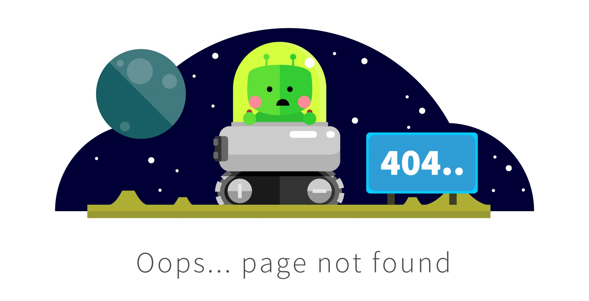

<div class='back'>
    
</div>
<!--Este código  muestra una etiqueta div con la clase 'back' que contiene una etiqueta img con el atributo src que apunta a una imagen llamada "notFound.jpg". La imagen se usa como alternativa cuando no se puede encontrar el recurso solicitado. -->